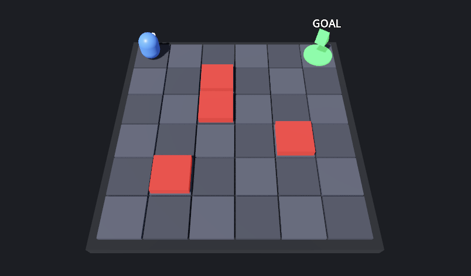
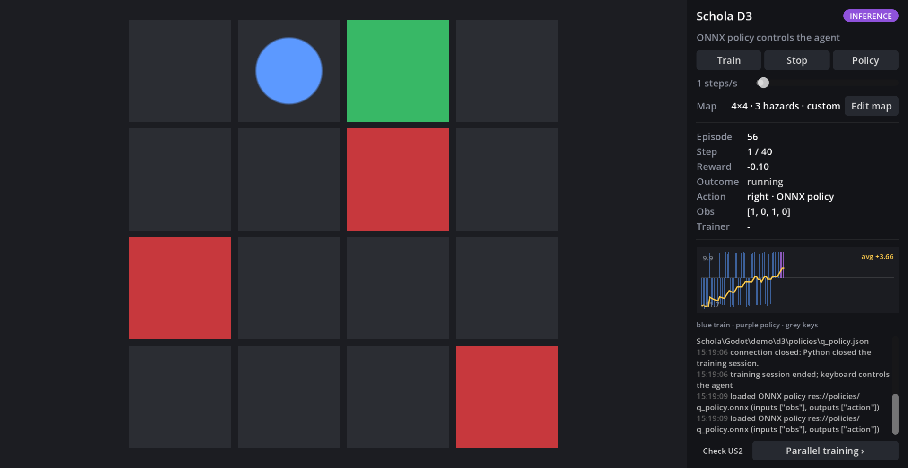
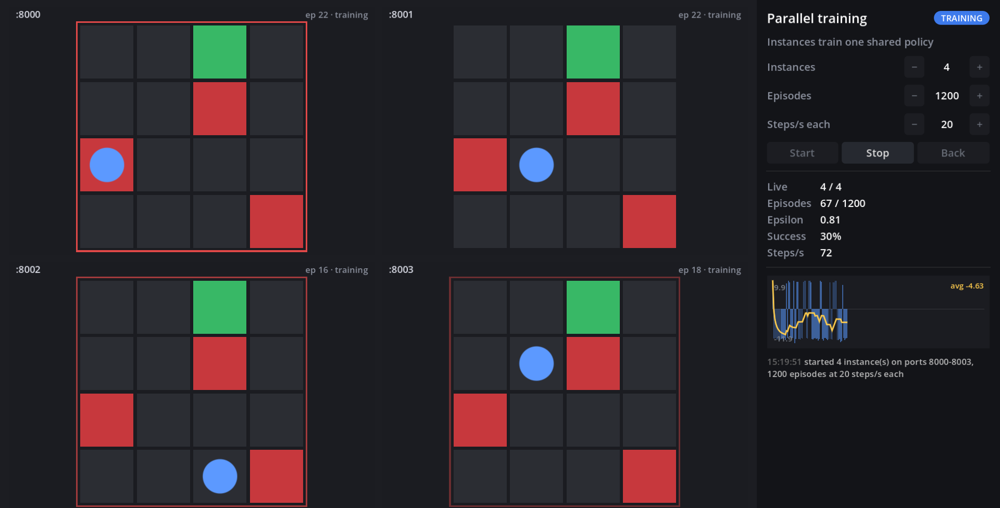

Three demos, one grid world.
Every deliverable ended in something you could run. From D2 on we kept the same task, an agent crossing a grid to a goal past hazards, so each demo shows exactly which parts moved from stand-in to production code.
Plan and prototype
D1 was about agreeing on what to build. We turned AMD's MVP into six user stories, which AMD approved, and drew a first architecture with separate Godot, gRPC and Python lanes.
The demo was a throwaway C# Inspector prototype: reward fields on an environment node, a status panel, and a goal you could walk into with WASD. It had no training behind it. Its job was to put an API in front of AMD early.
That paid off. AMD pointed out that goal and penalty fields lead toward a rules language nobody wants to maintain, and that C# would limit the plugin to the .NET build of Godot. A week later we had moved to a C++ GDExtension, which is what the plugin is today.

ScholaTrainingConnector and the stepper became ScholaInferenceStepper.The first full loop
D2 was the first time the whole workflow ran end to end. A 3D grid world sent observations and rewards to a local Python learner, applied its actions, and exported the result to ONNX. Godot then reloaded that model and drove the agent with Python closed.
The space types and ONNX inference were already native C++. The environment, the episode lifecycle and the connection to Python were stand-ins, written to match the real interfaces so they could be swapped out later. The exported policy reached the goal in 30 of 30 evaluation episodes.
At Demo Day the TA singled out the live learning graph and parameter display. The feedback we took forward was to show one diagram per story and keep to time.

Native end to end
For D3 we rebuilt the grid world in 2D on the native nodes. The environment and agent scripts only implement four hooks, and one native ScholaTrainingHost session runs every reset and step. Keyboard input, the Python learner and the ONNX policy all go through that same session, so the demo exercises the real lifecycle instead of a demo-only copy.
On top of that we added a map editor and parallel training. Separate headless Godot processes learn one shared policy, and a viewer shows each one live. On a 20-thread laptop, 4 processes ran 3.0× faster than one and 8 ran 5.0× faster.




| Godot processes | Steps per second | Speed-up |
|---|---|---|
| 1 | 472 | 1.0× |
| 4 | 1,410 | 3.0× |
| 8 | 2,369 | 5.0× |
What the D3 demo does not showTraining still used the temporary JSON connector and a tabular learner. The model bundled in the downloads is a shortest-path reference for the default map, not a learned policy, and a policy only fits the map it was trained on because hazards are not part of the observation.
From stand-in to production
Labelling stand-ins honestly was a rule we set after D2. This is how each piece of the training loop changed.
| Piece | D2 | D3 | On main today |
|---|---|---|---|
| Spaces (US2) | Native | Native | Native Box, Discrete, MultiDiscrete, MultiBinary, Dict |
| Environment and agent (US1) | Stand-in GDScript classes | Native adapters | Native plus dynamic agent populations |
| Episode lifecycle (US4) | Stand-in demo runner | Native ScholaTrainingHost |
Native |
| Configuration (US5) | Partial native nodes in the final release | Native one step callback, live warnings | Native |
| Connection to Python (US3) | Stand-in JSON over local TCP | Stand-in JSON over local TCP | Merged gRPC connector node; full Python run pending |
| ONNX inference (US7) | Native | Native per-agent policy state | Native sequence length from model metadata |
| Trainer | Stand-in tabular Q-learning | Stand-in tabular Q-learning | In progress Schola's SB3 and RLlib trainers, for D4 |
Examples on main
The D3 demo is frozen at its tag. Newer work comes with its own small examples instead.
Debug without Python
A five-cell board you step one action at a time through ScholaTrainingHost, with seeded resets and a live monitor. It is the quickest way to check an environment before training, and nine integration tests cover it.
extends ScholaAgent
var position := 0
func _observe() -> Variant:
return position
func _act(action: Variant) -> void:
position = clampi(position + (-1 if int(action) == 0 else 1), 0, 4)examples/manual_environment.Sensors and actuators
A 3D playground where an agent has no hand-written hooks at all. Three rays feed a ray-cast sensor and a movement actuator drives the body. Schola combines them into one observation and one action space automatically.
Agent (ScholaAgent)
├── Body (CharacterBody3D)
│ ├── Front (RayCast3D)
│ ├── Left (RayCast3D)
│ └── Right (RayCast3D)
├── RaySensor (ScholaSensor)
└── Movement (ScholaActuator)examples/us8_components.